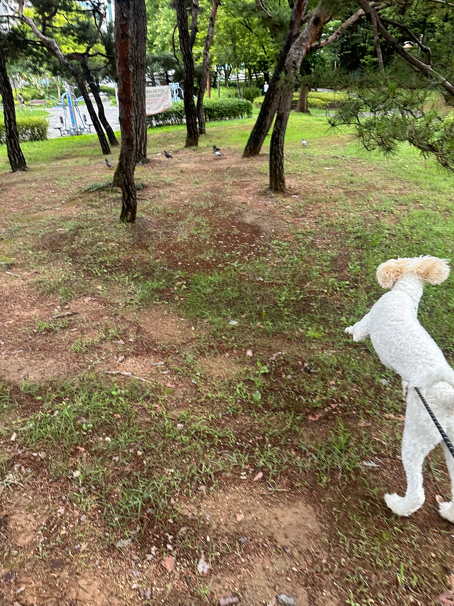
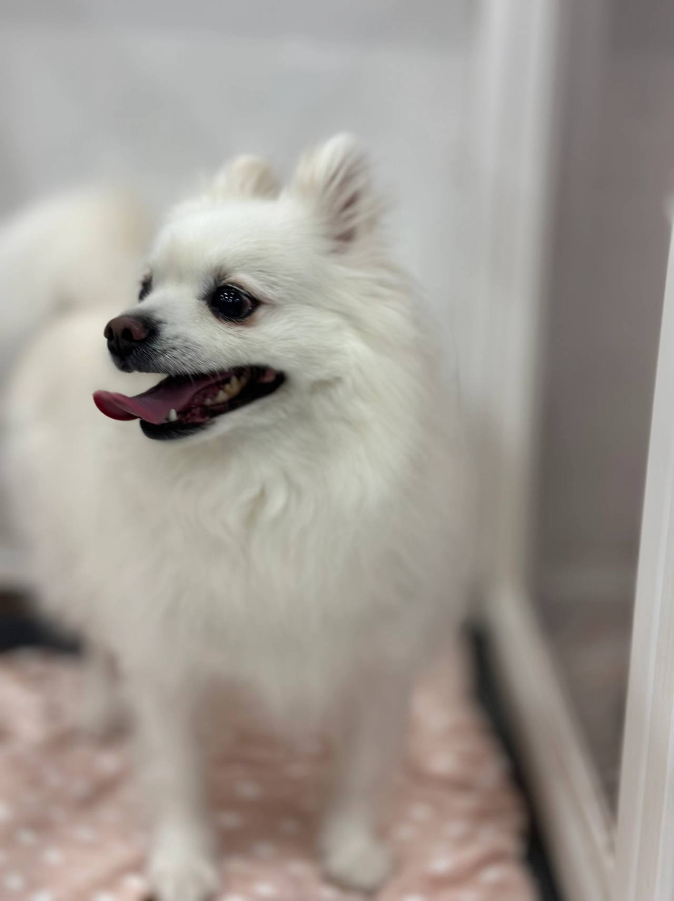
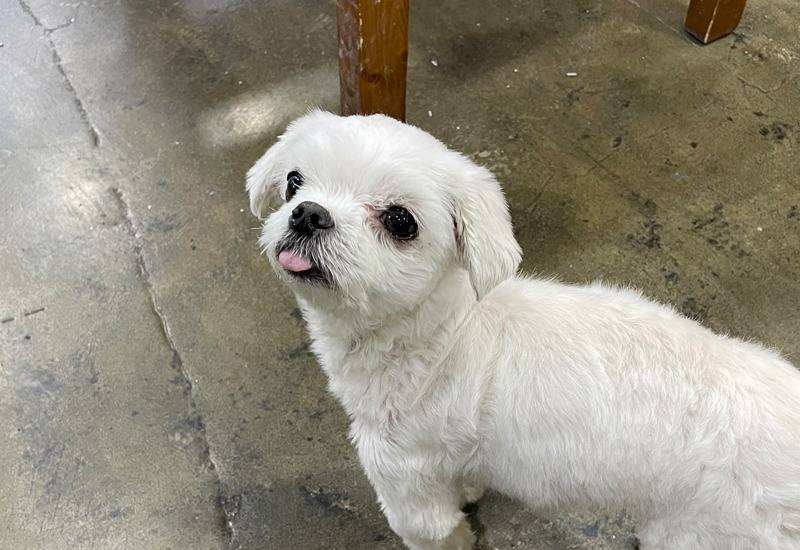

임신, 출산
출산 전후로돌보기 어렵거나아기와 함께 두기불안할 때
LOCAL GUIDE
쾌적하고 체계적인 생활 환경을 영위할 수 있는 서대문구고양이보호소 선택이야말로 진정한 책임 의식의 연장선입니다. 매일 정해진 시간에 이루어지는 식사와 산책 루틴이 아이의 면역력을 높여줍니다. 원내에 빈자리이 남아있지 않은 상태에서는 입소가 전면 불가능하다는 기준을 꼭 기억하세요.
REHOMING
개인적인 사정으로 반려견과 더 이상 함께하기 어려운 상황일 때 체계적인 절차를 거쳐 아이를 입소시키고 무료 분양으로 보금자리를 이어 줍니다. 전화 상담(0505-707-0401)을 통해 현재 상황을 파악하며 무리한 수용 대신 여건에 맞춰 신중하게 돌봄을 시작합니다.
갑작스러운 환경 변화 속에서도 아이가 평온함을 잃지 않도록 세심하게 보살피며 다음 행보를 준비합니다. 이는 책임 있는 보호 속에서 아이에게 새로운 가족을 만날 기회를 열어 주는 과정입니다.
새로운 가족을 찾아 주는 일은아이에게 건넬 수 있는마지막 선물입니다.
출산 전후로돌보기 어렵거나아기와 함께 두기불안할 때

함께 살다동물 알러지가 나타나생활이 어려워졌을 때

해외로 데려갈 수 없거나이사한 집에서함께하기 어려울 때군 입대와 오랜 부재도같은 경우에 가깝습니다.

보호자가 아프거나연로해졌을 때아이도 나이가 들어집에서 돌보기 어려울 때
상담부터 입양 공고까지, 순서는 같습니다.

유선 상담을 통해 나이, 지역, 질병 유무와 특이 상황을 확인합니다. 센터 내부 공간을 종합적으로 살펴본 뒤 1차 입소 가능 여부를 결정합니다.

직접 센터로 방문하시거나 이동 지원 일정을 조율하여 선택합니다. 전국 어디든 전담 인력이 무상으로 픽업하여 이동을 돕습니다.

제반 확인 사항과 규정된 비용 조항을 면밀하게 검토합니다. 안내 내용을 충분히 숙지한 후 정식 입소 동의서를 작성합니다.

건강 상태와 함께 대형견, 소형견, 노령견 여부를 다각도로 살핍니다. 확인된 상태에 맞춰 아이가 안전하게 머물 전용 공간을 정합니다.

안정적인 생활 속에서 아이의 사진과 영상을 정성껏 촬영합니다. 새로운 인연을 맞이할 수 있도록 사전 자료를 차분히 정리합니다.

공식적인 입양 공고를 등록하여 아이의 다음 여정을 이끕니다. 적합한 보금자리를 찾아 새로운 가족과 따뜻하게 연결됩니다.
개별 일과와 성향 점검을 거쳐 생활 적응을 준비하고 있는 강아지 현황입니다.
양육 환경과 반려견의 성향이 부합하는지 점검하는 순서입니다.
주거 형태, 가족 구성원의 동의 여부, 돌봄 시간 등을 유선 상담을 통해 점검합니다.
보호소에 방문하여 개체의 건강 이력과 행동 특성을 확인하고 직접 대면 시간을 가집니다.
지속 양육에 관한 세부 항목을 확인하고 확인 서류를 작성한 뒤 가정을 이룹니다.
산책하고, 밥 먹고, 미용하는 보호소의 하루입니다. 사진을 누르면 그 이야기를 볼 수 있어요.
안내
서대문구 전역에서 체계적인 관리 일과와 전문 관리사가 상주하는 안심 보호 공간을 찾고 계십니다.
자세한 입소 조건과 생활 규정이 궁금하신 보호자께서는 대표 전화 0505-707-0401 연결로 서대문구고양이보호소 관련 사항을 상세히 알아보세요. 정원이 초과되면 어떠한 경우에도 신규 수탁이 불가하므로 유선 일정 조율이 필수적입니다. 유선 통화를 통해 현재 아이의 특이 성향을 공유하고 상담을 예약할 수 있습니다.
Q: 사정이 너무 급박하여 오늘 즉시 아이를 데려다주고 싶은데 가능한가요? 결론부터 말씀드리면 무조건적인 당일 입소는 원칙적으로 진행되지 않습니다. 모든 입소는 철저한 사전 평가와 독립 격리실 확보 계획 하에 이루어집니다.
A: 생명체를 수용하는 시설에서 무계획적인 당일 입소를 허용하면 기존에 머물던 아이들의 위생과 안전이 크게 위협받습니다. 상담을 통해 고양이 건강 상태와 접종 이력을 확인하고 안전한 전용 격리 공간이 준비된 시점에 입소 일정을 조율하는 것이 원칙입니다.
보호의 종착역은 안전하고 따뜻한 평생 가정을 다시 만나는 것입니다. 보호된 아이를 입양하고자 하는 분들은 입양 전문 상담 직통 전화인 0505-464-1004로 연결되어 철저한 자격 검증을 거치게 됩니다.
입양 희망자의 주거 안정성, 산책과 케어에 투여할 수 있는 시간, 가족 구성원의 동의 등을 면밀히 심사하여 재파양 없는 평생 반려 생활을 보장하는지 확인하십시오.
센터는 생명을 수용하는 곳이므로 공간이 확보되지 않은 상태에서 무제한으로 개체를 받지 않습니다. 무조건적인 당일 입소를 내세우는 곳은 위생 불량이나 개체 관리 부실로 이어질 위험이 크므로 경계해야 합니다. 아이들마다 성향과 체격이 다르고 전염성 질환 전파를 막기 위한 사전 조치가 선행되어야 하므로 계획된 절차에 맞춰 공간을 배정합니다.
상담 시에는 대상 고양이 품종과 연령, 과거 병력, 중성화 수술 여부, 짖음이나 분리불안 등 행동 특성을 투명하게 공유해야 합니다. 세부 정보가 명확해야 담당 관리사가 배정될 전용 생활실을 준비하고 초기 적응을 돕는 매뉴얼을 수립할 수 있습니다.
프로필을 보고 입양을 희망하는 분들은 입양 전용 라인인 0505-464-1004로 연결되어 심층 심사를 받게 됩니다. 가족 구성원의 동의 여부, 실내 주거 형태, 산책 가능 시간, 경제적 양육 계획 등을 엄격히 심사합니다.
단순 변심으로 인한 재파양을 사전에 막기 위해 심도 있는 대면 인터뷰를 통과한 가정에만 최종적으로 아이가 인도됩니다. 입양 후에도 정기적인 사진 소통과 사후 상담을 지원함으로써 생명이 평생 행복할 수 있는 선순환을 완성합니다.
치료를 마치고 재활 중이던 민석 씨는 센터로부터 아이가 새 가족의 품에서 환하게 웃고 있는 입양 사진을 전달받았습니다. 불가피한 이별로 인해 죄책감과 슬픔에 짓눌려 있던 민석 씨는 아이가 더 넓은 마당에서 사랑받으며 뛰노는 모습을 보며 마침내 무거운 마음의 짐을 내려놓을 수 있었습니다.
이처럼 체계적인 보호 시스템과 신뢰할 수 있는 입양 연계 절차는 한 생명을 끝까지 책임지고 지켜내는 가장 안전한 울타리가 됩니다. 서대문구 서대문구고양이보호소 고민으로 밤잠을 이루지 못하고 계신다면, 주저하지 말고 전문 상담을 통해 아이의 빛나는 내일을 열어주시기 바랍니다.
Q: 지자체 공설 보호소와 민간 전문 보호 시설의 가장 결정적인 차이는 무엇인가요? 많은 분들이 두 기관을 혼동하여 안타까운 상황에 처하곤 합니다. 공설 유기시설은 유실·유기된 개체를 임시 보호하여 공고를 올리는 국가 행정 기관으로, 정해진 공고 기간이 만료되면 공간적 한계로 인해 인도적 조치 절차를 밟게 됩니다.
A: 반면 전문 케어 센터는 아이가 머무는 동안 지속적인 돌봄과 위생 관리를 제공하며, 새로운 가족을 찾을 때까지 장기적으로 생활할 수 있는 환경을 보장합니다. 서대문구 서대문구고양이보호소 고민을 안고 계신 보호자라면 아이의 지속적인 삶을 위해 어떤 기관의 보호 체계를 선택해야 하는지 신중히 판단하셔야 합니다.
보호 관리 비용은 모든 아이에게 획일적으로 적용될 수 없습니다. 나이가 많은 노령견이거나 지속적인 약물 치료, 관절 관리가 필요한 아이는 더 많은 인력과 물품이 투입되므로 비용이 다르게 책정되는 것이 자연스럽습니다.
터무니없는 0원 홍보나 저가 미끼는 추후 관리 부실로 이어질 위험이 큽니다. 고양이 상태에 맞춰 명확하고 정직한 근거를 바탕으로 산출된 내역인지 아래 항목을 통해 점검해 보십시오.
보호 시설 이용 시 소요되는 비용은 정형화된 고정 수수료 체계로 획일화할 수 없습니다. 아이의 현재 연령, 지속적인 투약이 필요한 만성 질환의 유무, 대형견 여부, 중성화 시행 여부, 이상 행동 교정 필요성에 따라 머무는 기간 동안 투입되는 보살핌 자원이 완전히 달라지기 때문입니다. 따라서 획일화된 금액이나 비현실적인 무비용 안내는 현실적인 보호 환경을 훼손할 수 있습니다.
정확한 보호 관리 비용은 상담사를 통해 아이의 상세 신체 정보와 특이점을 확인한 뒤 투명하고 합리적인 기준에 맞추어 개별적으로 산정됩니다. 0505-707-0401을 통한 사전 유선 대화에서 모든 항목의 산출 배경을 명확하게 청취할 수 있습니다.
개별 맞춤 생활실 입실 및 루틴 적응
독립된 생활 공간에 입실하여 전담 매니저의 집중 모니터링 아래 정해진 일과표에 맞춰 생활을 시작합니다.
필수 서류 구비 및 현장 방문 일정 예약
보호 여력이 확인되면 신분증 사본과 동물등록 증빙 서류를 지참하여 정해진 방문 시간을 확정합니다.
현장 내방 및 물리적 환경 대면 검진
실제 머물게 될 시설의 위생 상태를 둘러보고 아이의 보행 상태, 피부, 안구 건강을 대면 확인합니다.
서대문구고양이보호소 상담 전화는 무엇인가요?입소 상담 전화는 0505-707-0401입니다. 서대문구이라고 해서 바로 맡길 수 있는 것은 아니고, 자리와 아이 상태를 먼저 확인합니다.
서대문구에 따로 적힌 보호소 주소가 있나요?서대문구고양이보호소 페이지는 서대문구 상담 안내입니다. 이 글에 없는 주소를 그 지역 지점이라고 안내하지 않습니다.
전화하면 바로 진행되나요?자리가 없거나 생활이 맞지 않으면 바로 진행되지 않습니다. 전화로 확인한 뒤 만남을 정합니다.
입소 시 어떤 증빙 서류들을 필수적으로 지참해야 하나요?보호자 신분증, 동물등록 정보 변경을 위한 등록증 또는 식별 번호, 최근 진료 및 접종 증명서를 지참하셔야 합니다.
보호소에 맡겨진 후 새로운 가족에게 입양되는 절차는 어떻게 되나요?성향 평가와 기초 적응을 마친 후 공식 공고를 통해 엄격한 주거 및 소득 심사를 통과한 입양자에게만 인계됩니다.
예약 없이 당일에 바로 방문하여 보호를 요청할 수 있나요?보호실 잔여 공간이 없으면 접수가 절대 불가하므로 반드시 사전에 전화로 공실 여부를 확인한 후 방문하셔야 합니다.
시설 이용에 수반되는 관리 비용은 어떻게 결정되나요?아이의 체격, 연령, 기저 질환에 따른 특별 케어 필요성에 따라 산출 기준이 달라지며 유선 상담 시 투명하게 안내해 드립니다.






CONTACT
입양과 입소, 전국 어디서든 전화로 상담합니다.
전국 입소문의